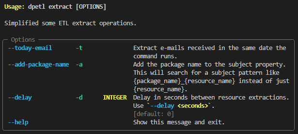

<style> .reveal pre code { max-height: 900px; white-space: pre-wrap !important; overflow-wrap: anywhere; } </style> <div class="r-hstack" style="align-items:flex-start; gap:80px"> <div style="flex:1"> ## Problema: - O repositório do datapackage contém: - dados brutos - dados processados - schemas - scripts - workflow - descriptor  </div> <div style="flex:1"> ## Proposta: - Repositório [dados-orcamentarios](https://github.com/splor-mg/dados-orcamentarios): - schemas - scripts - workflow - Repositório do datapackage: - dados processados - descriptor (datapackage.json)  </div> </div> <!--s--> ## dados-orcamentarios como orquestrador (task etl): - **pre_extract**: - **workflow**: atualiza o workflow com as opções de datapackages e anos - **yaml**: cria o arquivo datapackage.yaml, a partir do raw_datapackage.yaml - **bocache**: cria o cache do bo-cli (contém id e caminho dos objetos do BO) - **extract**: baixa os dados brutos - **transform**: escreve os dados processados (renomeia, anonimiza, roda cli...) - **pre_load**: atualiza os campos do datapackage.json (que será publicado no repositório final) - **load**: publica a pasta data/ e o datapackage.json no repositório (cria ou atualiza) ```toml [tool.taskipy.tasks] workflow = { cmd = 'poetry run python src/update_etl_options.py', help = 'Updates the package options in etl.yaml.' } yaml = { cmd = 'poetry run python src/build_datapackage.py raw_datapackage.yaml', help = 'Applies common fields to raw_datapackage.yaml.' } bocache = { cmd = 'poetry run bo cache update', help = 'Create cache for bocli.' } pre_extract = { cmd = 'task workflow && task yaml && task bocache', help = 'Necessary process before extract.' } extract = { cmd = 'poetry run dpetl $ETL_DESCRIPTOR extract --delay 5', help = 'Runs the ETL extract command.' } transform = { cmd = 'poetry run dpetl $ETL_DESCRIPTOR --no-validate transform', help = 'Runs the ETL transform command.' } pre_load = { cmd = 'poetry run python src/build_datapackage.py datapackage.json', help = 'Applies common fields to datapackage.json.' } load = { cmd = 'poetry run dpetl --validate-before load', help = 'Runs the ETL load command.' } etl = { cmd = 'task extract && task transform && task load', help = 'Runs all ETL process.' } ``` <!--s--> ## task workflow - `src/update_etl_options.py` - Atualiza as opções de run workflow no [Actions](https://github.com/splor-mg/dados-orcamentarios/actions) - Caso o ano vire - Caso seja adicionado um novo `raw_datapackage.yaml` - **Observação**: apenas os últimos 5 anos, para só usar o universo atual do siafi <!--s--> ## task yaml - `src/build_datapackage raw_datapackage.yaml`: gera o **`datapackage.yaml`** - Usa o **`fields.yaml`** para completar os metadados dos campos dos datapackages - Substitui placeholders `{{date}} {{year1}}` ou a variável de ambiente `YEAR` - **Siafi histórico**: substitui `/current/ ` por `/previous/` e remove campos que não existem no histórico <div class="r-hstack" style="align-items:flex-start; gap:40px; font-size:0.8em"> <div style="flex:1; min-width:0"> ```yaml name: dados_siafi title: Sistema Integrado de Administração Financeira – SIAFI {{year0}} resources: - name: alteracoes_orcamentarias type: table path: data_raw/alteracoes_orcamentarias.csv scheme: file format: csv mediatype: text/csv encoding: utf-8 schema: schemas/alteracoes_orcamentarias.yaml dpetl_extract: mode: cli arguments: - bo export dados_siafi/current/alteracoes_orcamentarias -q --dp DP0 –p "Ano de Exercício={{year0}}" -o datapackages/dados_siafi/data_raw/alteracoes_orcamentarias.csv ``` </div> <div style="flex:1; min-width:0"> ```yaml name: dados_siafi title: Sistema Integrado de Administração Financeira - SIAFI 2021 resources: - name: alteracoes_orcamentarias type: table path: data_raw/alteracoes_orcamentarias.csv scheme: file format: csv mediatype: text/csv encoding: utf-8 schema: fields: - name: Ano de Exercício type: string title: Ano de Exercício description: 'Ano de exercício do orçamento fiscal. ' constraints: required: true pattern: ^[1-9]\d{3}$ target: ano dpetl_extract: mode: cli arguments: - bo export dados_siafi/previous/alteracoes_orcamentarias -q --dp DP0 –p "Ano de Exercício=2021" -o datapackages/dados_siafi/data_raw/alteracoes_orcamentarias.csv ``` </div> </div> <!--s--> ## task bocache - `bo cache update`: constrói um cache para armazenar o **ID** e o **caminho** dos objetos do BO - Ao passar o caminho para o **bo export**, o ID é buscado no cache, diminuindo as requisições ``` ➜ dados-orcamentarios git:(main) task bocache Construindo cache para <usuario>... 83 objetos... 83 objetos salvos em /home/maria/.bocli/cache.json ``` <div style="max-height:600px; overflow-y:auto"> ```json { "updated_at": "2026-10-02T22:09:48.980751+00:00", "username": "<usuario>", "user_folder_id": 45016161, "children": { "45016161": [ {"id":45048915,"name":"~WebIntelligence","type":"Folder"}, {"id":45426145,"name":"dados_check_siafi","type":"Folder"}, {"id":45122135,"name":"dados_classificadores","type":"Folder"}, {"id":45119619,"name":"dados_siafi","type":"Folder"} ], "45426145": [ {"id":45426146,"name":"current","type":"Folder"} ], "45426146": [ {"id":45426235,"name":"alteracoes_orcamentarias","type":"Webi"}, {"id":45426236,"name":"cota","type":"Webi"}, {"id":45426237,"name":"credito","type":"Webi"}, {"id":45426238,"name":"execucao","type":"Webi"}, {"id":45426239,"name":"execucao_alem_credito","type":"Webi"}, {"id":45426240,"name":"receita","type":"Webi"}, {"id":45426241,"name":"restos_pagar","type":"Webi"}, {"id":45426242,"name":"restos_pagar_folha","type":"Webi"} ] } } ``` </div> <!--s--> ## task extract - `dpetl $ETL_DESCRIPTOR extract --delay 5` - **Exemplo**: modo cli do dpetl extract ([BO](https://www.bicorporativo.mg.gov.br/BOE/BI/)) - Executa um ou mais argumentos que forem passados no `datapackage.yaml` - Deve ser explicitado dentro do parâmetro **`dpetl_extract`** ```yaml name: dados_siafi title: Sistema Integrado de Administração Financeira – SIAFI {{year0}} resources: - name: alteracoes_orcamentarias type: table path: data_raw/alteracoes_orcamentarias.csv scheme: file format: csv mediatype: text/csv encoding: utf-8 schema: schemas/alteracoes_orcamentarias.yaml dpetl_extract: mode: cli arguments: - bo export dados_siafi/current/alteracoes_orcamentarias -q --dp DP0 -p "Ano de Exercício={{year0}}" -o datapackages/dados_siafi/data_raw/alteracoes_orcamentarias.csv ``` <!--s--> ## task transform - `dpetl $ETL_DESCRIPTOR --no-validate transform` - Pode-se definir: `path (data), format (csv.gz), encoding (utf-8), delimiter (,)` - Deve ser explicitado dentro do parâmetro **dpetl_transform** ```yaml name: dados_classificadores title: Tabelas Auxiliares de Classificadores resources: - name: acao type: table path: [data_raw/acao_previous.csv, data_raw/acao_current.csv] scheme: multipart format: csv mediatype: text/csv encoding: utf-8 schema: schemas/acao.yaml dpetl_extract: mode: cli arguments: - bo export dados_classificadores/current/acao -q --dp DP0 –o datapackages/dados_classificadores/data_raw/acao_current.csv - bo export dados_classificadores/previous/acao -q --dp DP0 -o datapackages/dados_classificadores/data_raw/acao_previous.csv dpetl_transform: format: csv ``` <!--v--> - Pode-se ainda definir `target`, para **renomear**, e `anonymize`, para **anonimizar** - **Em breve**: adicionar novos campos ao recurso, conforme regras orçamentárias, via modo cli do transform ```yaml - name: CNPJ_CPF Credor - Formatado type: string title: CNPJ/CPF Credor - Formatado description: 'Código formatado do CNPJ ou CPF do credor. ' missingValues: - '99999999999999' constraints: pattern: ^(\d{2}\.\d{3}\.\d{3}/\d{4}-\d{2}|\d{3}\.\d{3}\.\d{3}/\d{2}|CPF:[0-9a-f]{32})$ anonymize: method: aes_siv annotation: CPF:11 filter: len([c for c in cnpj_cpf_formatado if c.isdigit()]) == 11 target: cnpj_cpf_formatado ``` <!--s--> ## task pre_load - `src/build_datapackage datapackage.json` - Quando um recurso usa o modo cli do transform, o **`datapackage.json`** gerado reinfere os metadados - Isso porque, a mudança feita pelo cli é imprevisível para o dpetl (e o .yaml estará desatualizado) - Sobrescreve o `datapackage.json` gerado pelo `dpetl transform` - Usa o **`fields.yaml`** para completar os metadados dos campos dos datapackages - **Observação**: como os parâmetros validadores (`constraints`) só são adicionados depois, o `transform` não deve validar o `datapackage.json` (por isso o `--no-validate`) <!--s--> ## task load - `dpetl --validate-before load` - Pode-se definir: `owner, repo, level (user), visibility (private)` - Deve ser explicitado dentro do parâmetro **dpetl_load** (a nível *package*) - **Observação**: não há `$ETL_PACKAGE`, pois no workflow, essa variável é usada para definir o `datapackage.yaml` - Além disso, é desnecessário, pois o `transform` só criou o `.json` para o `$ETL_PACKAGE` ```yaml name: dados_siafi title: Sistema Integrado de Administração Financeira – SIAFI {{year0}} owner_org: secretaria-de-estado-de-planejamento-e-gestao-seplag dpetl_load: owner: splor-mg repo: dados-siafi-{{year0}} level: orgs visibility: public ``` <!--s--> ## dpetl ## Estrutura: - **dpetl** - pacote - **docs** - splor-mg.github.io/dpetl/ - **tests** - 98% coverage - **pypi** - pypi.org/project/dpetl/ <!--s--> ## dpetl cli.py - Flags e comandos são definidos nos arquivos `cli.py` - Utiliza a biblioteca **`typer`** - Além disso, utiliza biblioteca **`logging`** para os logs - **Observação**: se usar a flag `--verbose`, gera ainda um arquivo `dpetl.debug.log`  <!--s--> ## dpetl helpers iterator.py - **Descriptor**: passado pela flag `-d` `>` arquivo `datapackage` na raiz `>` arquivos `datapackages/*/datapackage` - Formato `.yaml` para comando `extract` ou `transform` e `.json` para comando `load` ## dpetl helpers validate.py - Valida (`frictionless validate`) recurso por recurso, após o processo ser executado - Pode-se passar a flag `--validate-before` para validar o pacote inteiro antes do processo iniciar - Caso algum recurso esteja inválido, o processo inteiro é interrompido - **Observação**: só há validação para o `load` se passada a flag `-vb` - Há também as flags `--no-validate e --no-stop` ## dpetl helpers network.py - Lida com `proxy` (caso de `extract` no modo `email`) <!--s--> ## dpetl extract - Para cada recurso, deve haver um parâmetro **dpetl_extract** com um outro parâmetro **mode** definido - **Opções**: `email, api, cli` — cada um possui seu próprio `script` em `dpetl/extract/` `dpetl -d datapackages.toml extract --today-email --add-package-name` <div class="r-hstack" style="align-items:flex-start; gap:40px"> <div style="flex:1; min-width:0; font-size:0.8em"> ```yaml name: dados_siafi title: Sistema Integrado de Administração Financeira – SIAFI 2026 owner_org: secretaria-de-estado-de-planejamento-e-gestao-seplag resources: - name: credito type: table path: 'data_raw/credito.csv' scheme: file format: csv mediatype: text/csv encoding: utf-8 dialect: schemas/dialect.yaml schema: schemas/credito.yaml dpetl_extract: mode: email mailbox: '[Gmail]/Trash' ``` </div> <div style="flex:1; min-width:0"> <p></p> </div> </div> <!--s--> ## dpetl transform - Converte o recurso para uma **tabela petl** - **Renomeia** (caso haja `target`) e **anonimiza** (caso haja `anonymize`) - **Escreve** o arquivo em `data/`, no formato `.csv.gz`, encoding `utf-8`, separado por `,` - Opção **`cli`** (roda o processo anterior ou não) + opção **`stdin`** (ou escreve no `path` definido) - Atualiza **metadados** antes de **validar** e depois escreve o **`datapackage.json`** <!--v--> ## dpetl transform keygen - Esse comando gera uma chave que pode ser utilizada como **`ANONYMIZE_SECRET_KEY`** - Serve para o método **`AES-SIV`** de anonimização - As outras opções de anonimizar são com **máscara** ou **`SHA-256`** ``` ➜ dpetl git:(main) dpetl transform keygen ANONYMIZE_SECRET_KEY=<chave gerada> ``` ```yaml - name: razao_social_credor type: string title: Razão Social Credor constraints: maxLength: 500 anonymize: method: '[INFORMACAO COM RESTRICAO DE ACESSO]' filter: > (int(ano) > 2021 and int(uo_cod) == 4291 and int(upg_cod) == 761) or (int(uo_cod) == 2041 and int(elemento_cod) == 31 and int(item_cod) == 2) ``` <!--s--> ## dpetl load - Precisa de autenticação pelo **`GH_TOKEN`** ou **`GH_APP_ID`** + **`GH_APP_PRIVATE_KEY`** - Usa parâmetros definidos no **dpetl_load** (nível _package_): `owner, repo, level (user), visibility (private)` - Remove os parâmetros `dpetl_extract, dpetl_transform e dpetl_load` do `datapackage.json` - Envia os dados processados da pasta **`"data/"`** e o descriptor (**`datapackage.json`**) - **TODO**: publicar outros arquivos, como `README.md` - Exclui arquivos desatualizados - Exemplo: caso um recurso mude de nome - Se **`"repo"`** não for definido, publica dentro do repositório onde o `dpetl load` está rodando <!--s--> ## docs - **Documentação**: pasta `docs/` + `README.md` - **`README.md`**: bem breve - Site com **Zensical**: mais completo, com exemplos - https://splor-mg.github.io/dpetl/ <!--s--> ## tests - `task test` - **`tests/`** - Exemplo (data + descriptor) - Testes gerais dos comandos (cli, extract, transform, load) - Testes mais específicos (anonymize, validate, iterator...) - Proteção da branch `main` - A todo push é rodado os testes — **`wofkflows/test.yaml`** - Deve ser criado um `PR` para fazer `push` para a `main` (testes devem passar) <!--s--> ## pypi - **`workflows/coverage_release.yaml`** - **`test-coverage`**: roda o teste novamente, mas para gerar o **`coverage.svg`** - O GH App **`"app-actions-github"`** tem permissão para fazer `push` na `main` - **`release`**: `cz bump + `publica o pacote no **pypi** - https://pypi.org/project/dpetl/